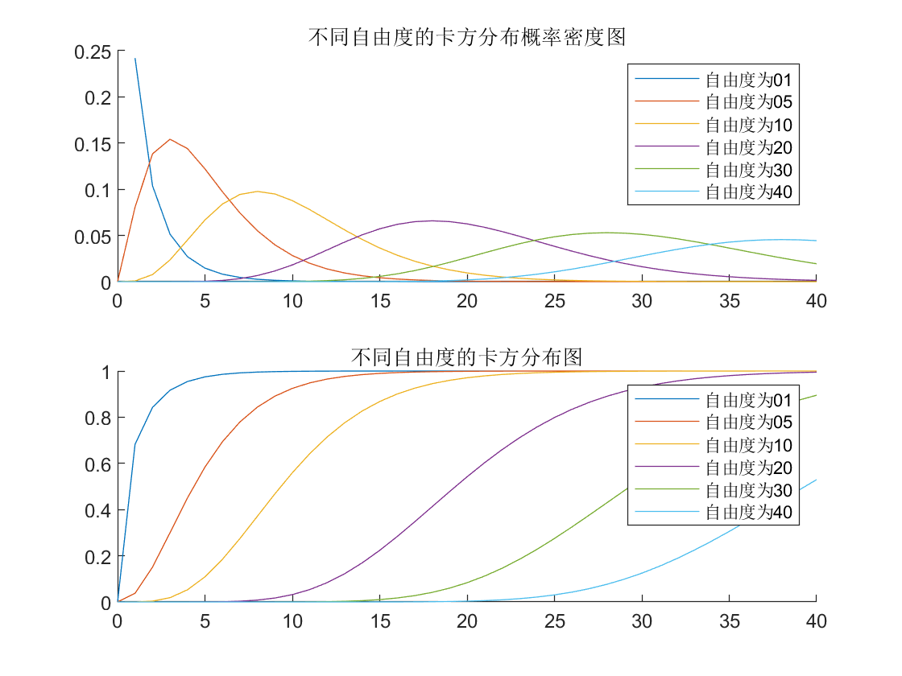
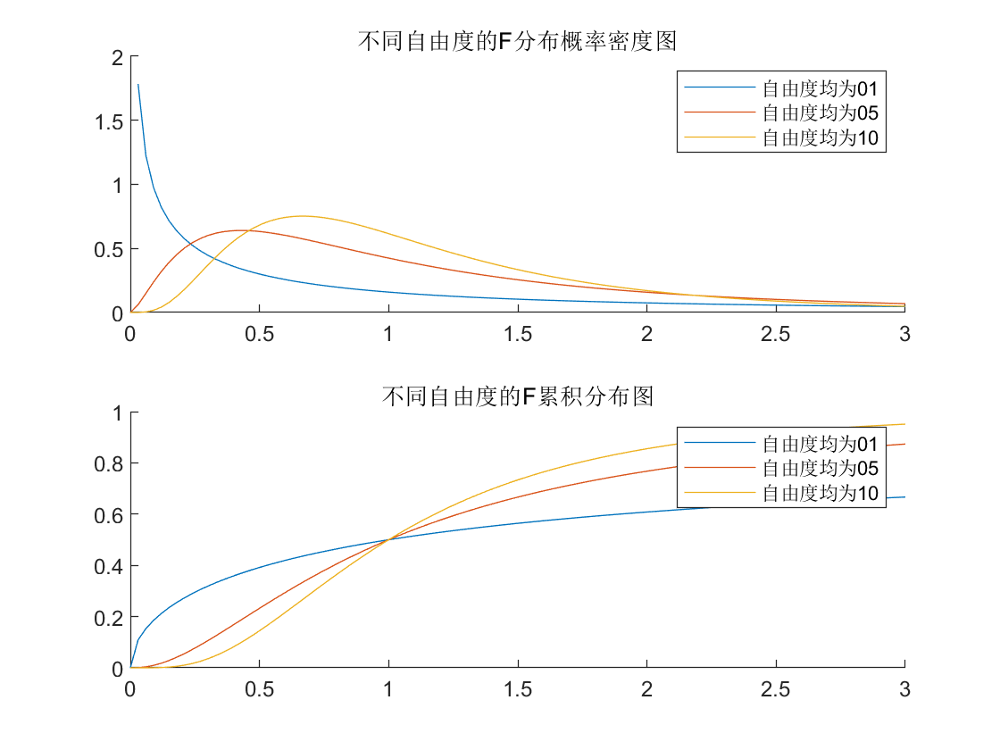
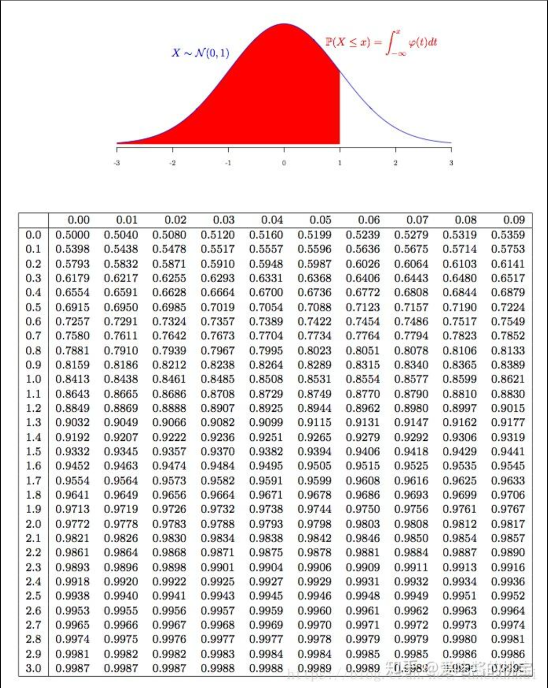
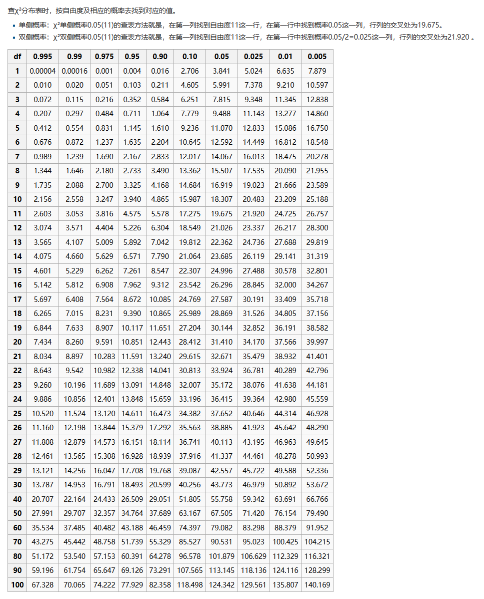
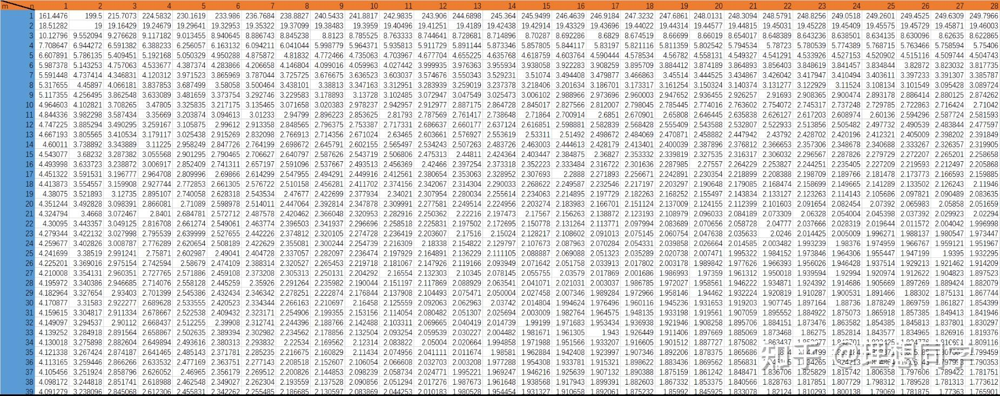
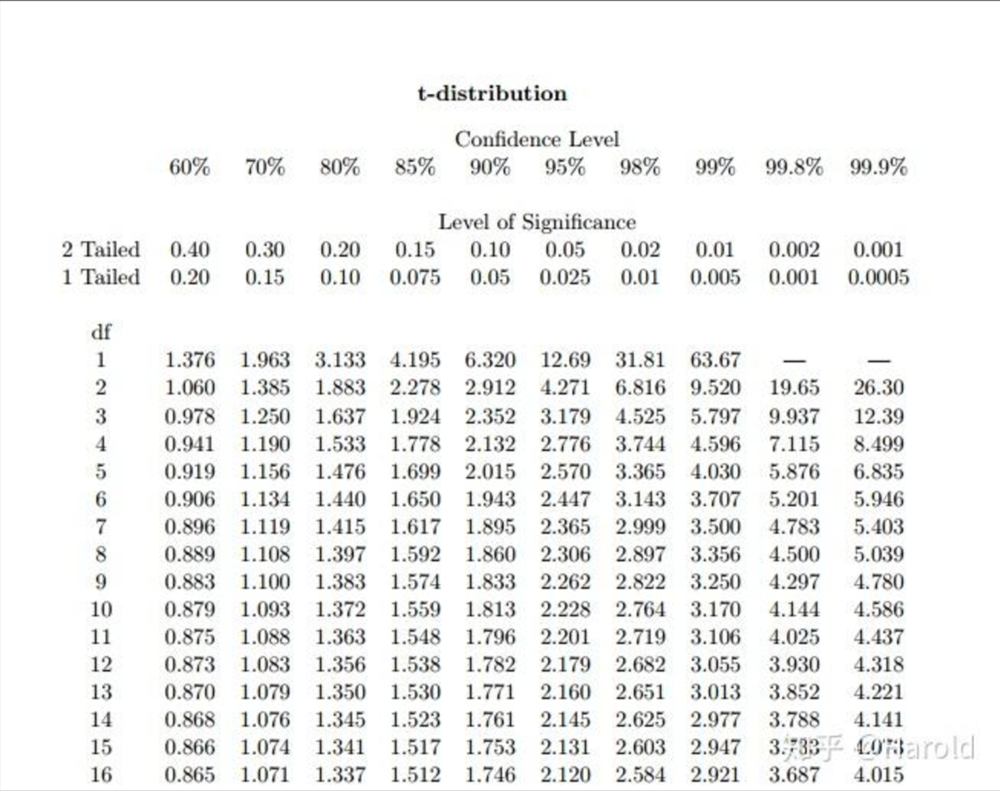

参数估计
本文最后更新于 2024年12月12日 晚上
概率论-参数估计
点估计
设总体X的分布函数F(x;$\theta$)形式为已知,$\theta$是待估参数.$X_1,X_2…X_n$是X的一个样本,$x_1,x_2,…x_n$,是相应的一个样本值.
点估计问题就是要构造一个适当的统计量$\hat\theta(X_1,X_2…X_n)$,用它的观察值$\hat\theta(x_1,x_2…x_n)$作为未知参数$\theta$的近似值,
我们称$\hat\theta(X_1,X_2…X_n)$为0的估计量,称$\hat\theta(x_1,x_2…x_n)$为0的估计值.统称为估计,并都简记为$\hat \theta$
常用的点估计方法:矩法
- 用样本的k阶矩作为总体的k阶矩的估计量
- 建立含有待估计参数的方程
- 从而可解出待估计参数
常用的点估计方法:极大似然法
思想方法:一次试验就出现的事件有较大的概率
$L(P)=p^{\mathop\Sigma\limits_{i=1}^n x_i}(1-p)^{n-\mathop\Sigma\limits_{i=1}^n x_i}$
选择恰当的$\theta=\hat\theta$,使得$L(\theta)$取最大值,即
$L(x_1,x_2,…,x_n,\hat\theta)=\max\limits_{\theta\in \Theta}\{f(x_1,\theta)f(x_2,\theta)…f(x_n,\theta)\}$
则称这样的$\hat\theta=g(x_1,x_2,…,x_n)$参数$\theta$的极大似然估计值
极大似然估计值的不变性定理
设$\hat\theta$是$\theta$的极大似然估计值,$u(\theta)(\theta\in\Theta)$是$\theta$的函数,且具有单值的反函数$\theta=\theta(u),u\in U$,则$\hat u=u(\hat\theta)$是$u(\theta)$的极大似然估计值
点估计的评价标准
- 无偏性
- 有效性
- 一致性
无偏性
定义:设$(X_1,X_2,…,X_n)$是总体X的样本,$\hat\theta=\hat\theta(X_1,X_2,…,X_n)$是总体参数$\theta$的估计量,$E(\hat\theta)$存在,如果:
$E(\hat\theta)=\theta$
则称$\hat\theta$为$\theta$的无偏估计量
在估计时,以样本方差$S^2$估计总体方差
有效性
$设\hat\theta_1=\theta_1(X_1,X_2,…,X_n)\\\hat\theta_2=\theta_2(X_1,X_2,…,X_n)$
都是总体参数$\theta$的无偏估计量,且
$D(\hat\theta_1)<D(\hat\theta_2)$
则称$\hat\theta_1$比$\hat\theta_2$更有效
一致性
使用到的分布
卡方分布(chi-square distribution)
若n个相互独立的随机变量$X_1,X_2\dots X_n$均服从标准正态分布,则n个服从标准正态分布的随机变量的平方和$Q=\sum^n_{i=1}X_i^2$构成一个新的随机变量,其分布规律称为$\chi^2$分布,记作$Q\sim \chi^2(v),其中v=n-k$

t-分布(t-distribution)
- 根据小样本来估计呈正态分布且方差未知的总体的均值
- 假如$X\sim N(0,1),Y\sim \chi^2(n)$,则$Z=\dfrac{X}{\sqrt{Y/N} }$称为自由度为n的分布,记为$Z\sim t(n)$
- 分布密度函数$f_Z(x)=\dfrac{\Gamma(\dfrac{n+1}{2})}{\sqrt{n\pi}\Gamma(\dfrac{n}{2})}(1+\dfrac{x^2}{n})^{-\dfrac{n+1}{2} }$
F分布
若总体$X\sim N(0,1)$,$(X_1,X_2,\dots,X_{n_1})$与$(Y_1,Y_2,\dots,Y_{n_2})$来自X的两个独立样本,设统计量
$F=\dfrac{\sum^{n_1}_{i=1}X_i^2}{n_1}/\dfrac{\sum^n_{i=1}Y_i^2}{n_2}$
则称统计量$F$服从自由度$n_1$和$n_2$的F分布,记作$F\sim F(n_1,n_2)$

辨别三种抽样分布
$X和Y相互独立且都服从N(0,\sigma^2),而X_1,X_2,\dots,X_9和Y_1,Y_2,\dots,Y_9分别是来自总体X和Y的简单随机样本$
$(1)\frac{1}{3\sigma}\sum^9_{i=1}X_i\sim N(0,1)$
$(2)\frac{1}{\sigma^2}\sum^9_{i=1}Y_i^2=\sum^9_{i=1}(\dfrac{Y_i}{\sigma})^2\sim\chi^2(9)$
$(3)U=\dfrac{\dfrac{1}{\sqrt{9\sigma} }\sum^9_{i=1}X_i}{\sqrt{\dfrac{1}{\sigma^2}\sum^9_{i=1}Y_i^2/9} }\sim t(n)$
$(4)U^2=\dfrac{\left(\dfrac{1}{\sqrt{9\sigma} }\sum^9_{i=1}X_i\right)^2/1}{\left(\sqrt{\dfrac{1}{\sigma^2}\sum^9_{i=1}Y_i^2}\right)^2/9}\sim F(1,9)$
区间估计
置信空间是指由样本统计量所构成的总体参数的估计区间.展现的是这个参数的真实值有一定概率落在测量结果的周围的程度,其给出的是被测量参数的测量值的可信程度,即前面所要求的一个概率.
$(\bar X-Z_{1-\alpha/2}{\sqrt\frac{\sigma^2}{n} },\bar X+Z_{1-\alpha/2}{\sqrt\frac{\sigma^2}{n} })$
$\bar X-Z_{1-\alpha/2\sqrt{\frac{\sigma^2}{n} } }$:$\mu$的置信下限
$\bar X+Z_{1-\alpha/2\sqrt{\frac{\sigma^2}{n} } }$:$\mu$的置信上限
$1-\alpha$:置信度
常用公式
(1)方差$\sigma^2$已知,$\mu$的置信区间
$(\bar X-Z_{1-\alpha/2}\sqrt{\frac{\sigma^2}{n} },\bar X+Z_{1-\alpha/2}\sqrt{\frac{\sigma^2}{n} })$
推导:由$\bar X\sim N(\mu, \frac{\sigma}{\sqrt n})$选取枢轴量
$\frac{\bar X-\mu}{\frac{\sigma}{\sqrt n} }\sim N(0,1)$
(其中Z值根据下文标准正态分布表查表得)
(2)方差$\sigma^2$未知,$\mu$的置信区间
选取枢轴量:$T=\frac{\bar X-\mu}{\frac{S}{\sqrt n} }\sim T(n-1)$
由$P\left( \left|\frac{\bar X-\mu}{\frac{S}{\sqrt n} }\right| \geq t_{1-\frac{\alpha}{2} }(n-1)\right)=\alpha$
其中$\frac{1}{n-1}\sum^n_{i=1}(X_i-\bar X)^2=S^2$
$\left(\bar X-t_{1-\alpha/2}(n-1)\frac{S}{\sqrt n},\bar X+t_{1-\alpha/2}(n-1)\frac{S}{\sqrt n}\right)$
(其中$t$值根据下文T分布表查表得)
(3)当$\mu$已知时,方差$\sigma^2$的置信空间$
$枢轴量Q=\sum\limits_{i=1}^n\left(\frac{X_i-\mu}{\sigma}\right)^2\sim \chi^2(n)$
由概率$P\left(\chi_{\alpha/2}^2(n)<\frac{\sum^n_{i=1}(X_i-\mu)^2}{\sigma^2}<\chi_{1-\alpha/2}^2(n)\right)=1-\alpha$
$\sigma^2的置信度为1-\alpha置信区间为:\\\left(\frac{\sum_{i=1}^n(X_i-\mu)^2}{\chi_{1-\alpha/2}^2(n)},\frac{\sum_{i=1}^n(X_i-\mu)^2}{\chi_{\alpha/2}^2(n)}\right)$
$\chi_{\alpha/2}^2(n)从下文卡方分布表中得到$
(4)由$\mu$未知时,方差$\sigma^2$的置信区间
$\frac{(n-1)S^2}{\sigma^2}\sim \chi^2(n-1)$
$P(\chi_{\alpha/2}^2<\frac{(n-1)s^2}{\sigma^2}<\chi_{1-\alpha/2}^2)=1-\alpha$
$\sigma^2的置信度为1-\alpha置信区间为:\\\left(\frac{(n-1)S^2}{\chi_{1-\alpha/2}^2(n-1)},\frac{(n-1)S^2}{\chi_{\alpha/2}^2(n-1)}\right)$
单侧置信空间
$P(\theta>\theta)=1-\alpha/P(\theta<\theta)=1-\alpha$
$(-\infty,\bar \theta)或者(\underline \theta,+\infty)$为置信度$1-\alpha$的单侧置信空间
分布表





